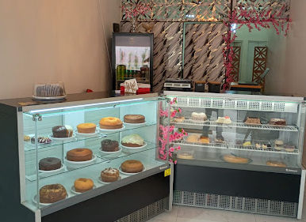

Tudo começou com encomendas feitas na cozinha de casa para vizinhos e amigos do Tatuapé. O boca a boca cresceu, os pedidos aumentaram e, pouco tempo depois, abrimos as portas na Rua Cesário Galero.
Hoje produzimos bolos caseiros fatiados, bolos de festa, doces finos, fogazza e pastel fritos na hora, além do café que acompanha a tarde de quem trabalha e mora na região.
Nosso compromisso é simples: massa fresca todo dia, recheios feitos na casa e um atendimento que lembra o nome de quem entra pela porta.

Nota no Google
Avaliações
Produção própria
Manteiga, ovos frescos, chocolate nobre e frutas da estação.
A vitrine é reposta diariamente; o que não é fresco não é vendido.
Ajudamos a escolher sabor, tamanho e prazo da encomenda.